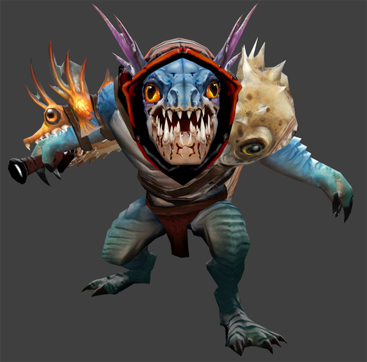
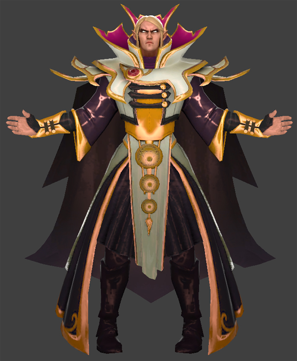

Alchemist,Раззил Темновар Преданность священной алхимии была
традицией рода Темноваров, но никто в нём не был таким изобретательным,
честолюбивым и безрассудным, как юный Раззил. Повзрослев, он оставил
семейное дело и решил попробовать себя в алхимическом создании золота. С
присущей ему самоуверенностью он объявил, что обратит в золото целую
гору. Спустя два десятилетия исследований, вложений и подготовок алхимик
с треском провалился — и вскоре оказался за решёткой за множественные
разрушения, причинённые экспериментом. Однако Раззил был не из робкого
десятка и тщательно обдумывал варианты побега, чтобы продолжить свои
исследования. Когда его новым сокамерником оказался свирепый огр, в
голову алхимика тут же пришла идея. Первым делом Раззил уговорил огра не
съедать его, а потом принялся тщательно составлять настойку из плесени и
мха, что нашёл на исправительных работах. Через неделю варево созрело.
Чуть огр выпил его, он тут же впал в ослепительную ярость, разорвал
железные прутья, разнёс стены и перебил стражу. Скоро беглецы затерялись
где-то в пригородном лесу, оставив за собой след разрушений и не оставив
ни следа от преследователей. Когда действие настойки отошло, огр
чувствовал себя вполне хорошо и выглядел счастливым и даже энергичным. И
вот, решив работать вместе, парочка отправилась собирать материалы,
чтобы Раззил в очередной раз попытал удачу.

Крадущийся в ночи, SlarkМало кому из жителей суши известно о
Тёмном рифе — подводной темнице для всякого подводного отребья. Её
устланные иглами ходы кишат убийцами-змееногими, изменниками из глубин,
маньяками-мерансами и прочими морскими обитателями, совершившими
преступления против своих сородичей. В этом тусклом лабиринте несут
дозор угри и стоят на страже гигантские анемоны, и выживают тут лишь
самые злобные. Здесь наш герой провёл полжизни, заточённый за давно
забытые прегрешения, не ведая согласия и радостей, никому не доверяя.
Выжил он лишь потому, что был скрытным и безжалостным — и хранил мысли и
замыслы при себе. Но однажды двенадцать заключённых, прозванных
впоследствии Дюжиной Тёмного рифа, задумали побег, которому суждено было
окончиться плачевно. Заговор хранился в строжайшей тайне, а кто совал
нос не в своё дело, тут же прощался с жизнью. Но всё же наш хитрец
разузнал о затее и подготовил себе место в ней. В день побега десятеро
из Дюжины погибли, так и не покинув Тёмный риф, а двоих изловили живьём,
вернули в темницу и казнили на потеху остальным узникам. Однако беглецов
оказалось тринадцать: юркий проныра воспользовался суматохой и был
таков. Теперь он скрывается в хищных мангровых зарослях у южной
оконечности Тенистого взморья и остаётся единственным, кому удалось
сбежать из Тёмного рифа.

Invoker, Карл Магия в своей самой ранней, даже можно сказать,
самой мощной форме, всегда являлась в основном искусством памяти. Она не
требовала техник, палочек или других принадлежностей, за исключением
разума самого чародея. Всё, что ему было нужно — мнемонические средства,
помогающие колдующему вспомнить в полных деталях ту психологическую
формулу, что раскроет магическую силу. Величайшие волшебники тех дней
были одарены отличной памятью, а сами заклинания были настолько сложны и
громоздки, что чародеи были вынуждены на чем-то специализироваться.
Однако даже самые отличные волшебники могли надеяться лишь на то, что
они запомнят за всю свою жизнь три-четыре заклинания, не более. Обычные
маги знали всего два заклинания, так что это не такое уж и необычное
явление, когда деревенский чародей знал только одно заклинание, да и то
требовало титанических усилий, куч подсказок и инструкций, работающих,
как лекарство от забывчивости, в те редкие случаи, когда это самое
заклинание просили продемонстрировать. Но среди всех этих волшебников
было всего одно, но гениальное и владеющее огромной памятью исключение,
и имя ему — Invoker. Уже в своей юности взрослый не по годам волшебник
сумел набить руку на использовании не четырех, не пяти, и даже не семи,
а не менее десятка заклинаний, которые он сотворял практически
мгновенно! Еще больше он уже и так знал, но просто считал бесполезными.
Одно из его заклинаний — Sempiternal Cantrap — было такой огромной мощи,
что следы от его использования в первые дни создания мира видны до сих
пор (или просто расщеплены на атомы). Большинство почти-бессмертных
живут тихо, пряча от мира свой секрет, но Invoker — отнюдь не тот, кто
хранит свой дар в кладовке. Он — древний, знающий гораздо больше
остальных, разум которого все еще имеет свободное место для рассуждений
о смысле существования… как и для колдовства, которым он развлекает
себя, наблюдая за последними днями этого мира.